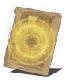

Descrição: Milagre intermediário. Restaura PV gradativamente.
Este milagre é usado pelos resolutos cavaleiros clérigos de Lindelt quando lutam nas linhas de frente.
Há uma história passada através de gerações, afirmando que esse bando de cavaleiros uma vez derrotou um dragão venenoso que ameaçava toda nação.
Localização:
Usos: 2
